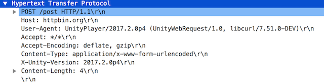
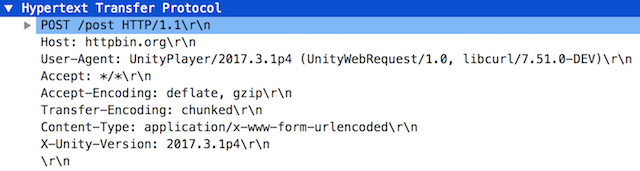

Unity 2017.3以降のUnityWebRequestの話
概要
2017.2 ~ 3の間で仕様変更があって、ただそのことについてしっかり書いてるところを見たことがなかったのでまとめる。
AutoyaのテストでHTTP系のやつがあってそれで気づいた。
発端
Unity2017.3から、UnityWebRequestがデフォルト設定ではcontent-lengthをつけなくなった。
これはバグじゃね？って話でissueが上がったりしていた。
WWW REQUEST DOESN'T SEND CONTENT-LENGTH HEADER
https://issuetracker.unity3d.com/issues/www-request-fails-to-get-content-length-header
具体例
デフォルトのUnityWebRequestのヘッダが以下のように変わる。
2017.2系まで

2017.3系以降

このとき、両versionとも、UnityWebRequestのchunkedTransferは、デフォルトのtrueのまま。
お分かりいただけただろうか？
2017.2系だと、chunkedTransfer = trueなのにTransfer-Encodingが全く入っておらず、
かつContent-Lengthが入っている。
2017.3系だと、chunkedTransfer = trueなのでTransfer-Encoding: chunked が入っていて、
Content-Lengthが入っていない。
Content-Lengthとchunkedの関係は、RFC2616にいろいろ書いてある。
https://tools.ietf.org/html/rfc2616
簡単に書くと、2017.2まではchunkedTransfer = trueなのにchunkedになってないリクエストを送っていた。
chunkedありなしとサーバ側の挙動の関係でいえば、
Messages MUST NOT include both a Content-Length header field and a
non-identity transfer-coding. If the message does include a non-
identity transfer-coding, the Content-Length MUST be ignored.
みたいな記述があり、両方入っている場合はContent-Lengthが無視される。
ということで、バグっていたのは2017.2までで、Unity側はどっかでこのことに気づいて手を入れ(どこかのパッチリリースだった気がする、忘れた)、
デフォルトの状態のUnityWebRequestのヘッダパラメータからはContent-Lengthが消えた。
このため、例えば自分がテストに使っている、httpbin.org(https://httpbin.org)とかが、chunkedに対応してなくてcontent-lengthないよ～ってエラーを返してきたりしていた。
対処
えーーっと、2017.3以降は、chunkedを使いたい場合はそのまま、使いたくない場合はchunkedTransfer = falseとする必要がある。
2017.2以前で、最新のパッチリリースはともかく、chunkedを使いたい場合は、、えーーーーっと、、まあ、、誰か試して。自分はもう2017.3以降に対応することにしたんで、、
教訓
パラメータが一切変わらなくても要素が変わることがあり、それに対してテストで気づけたので、まあ、はい。
テストは自分を助けてくれる。